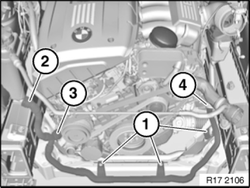
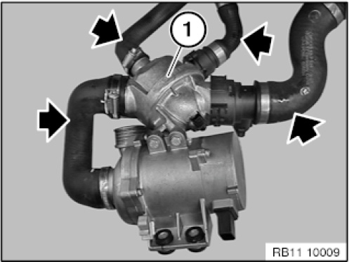
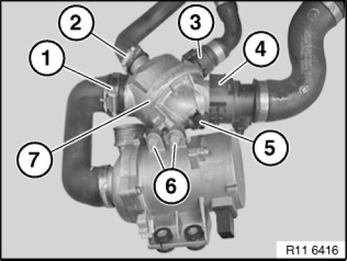
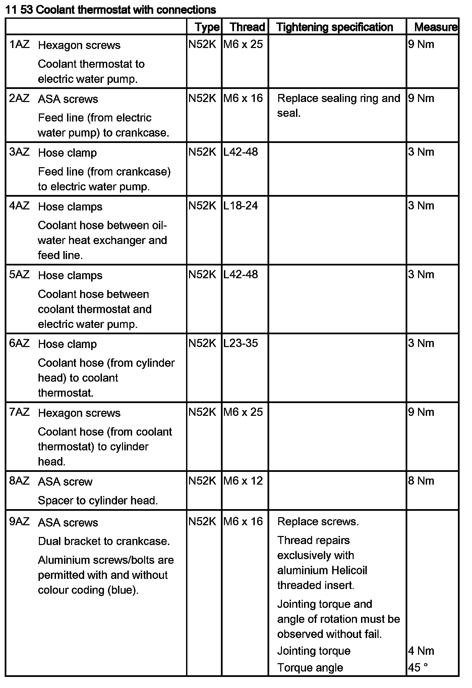
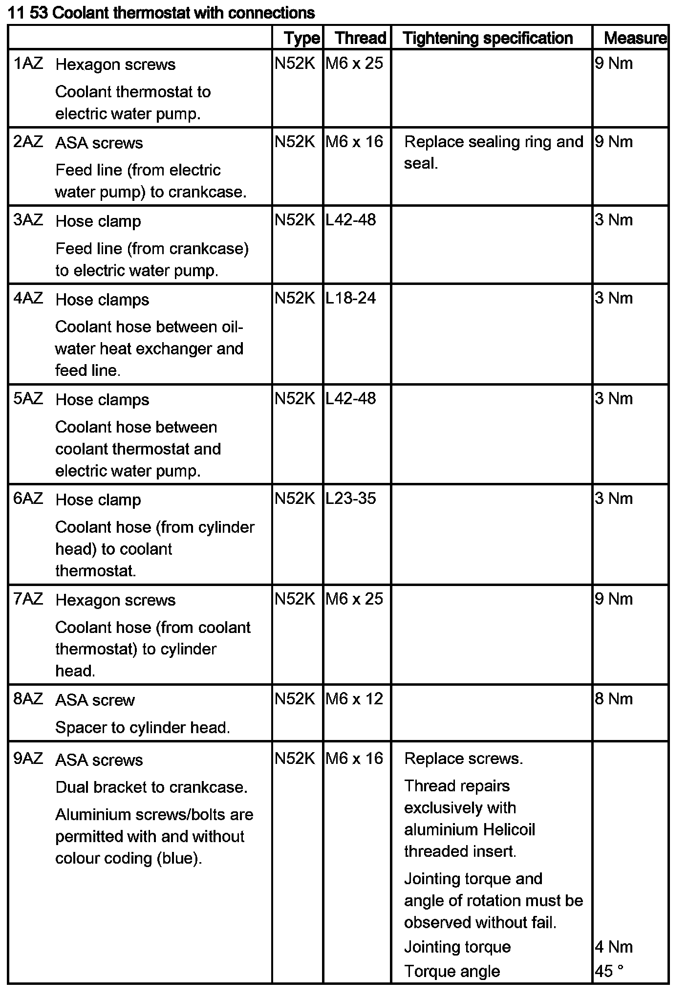
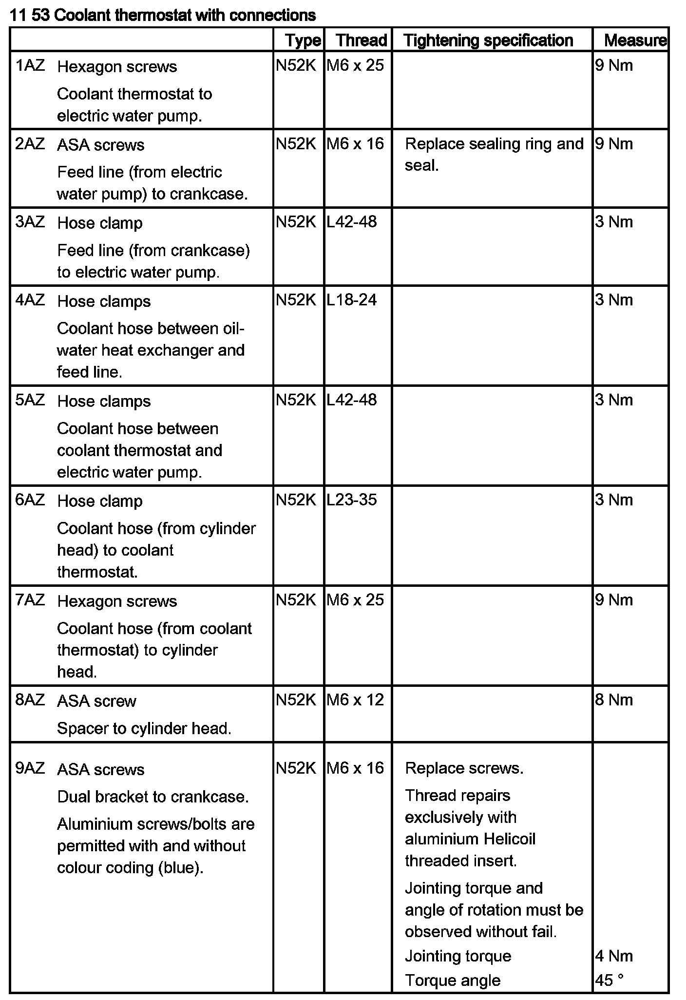
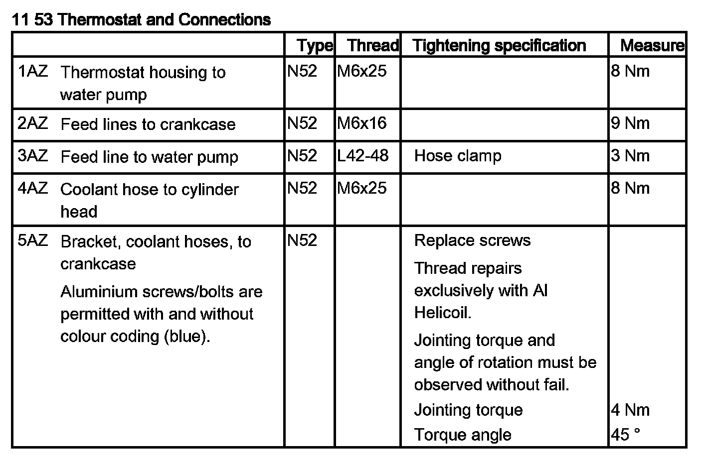
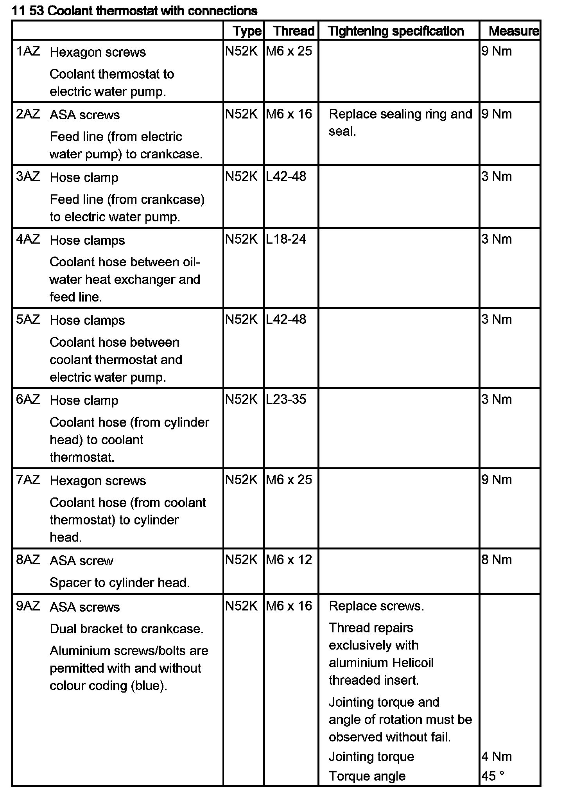
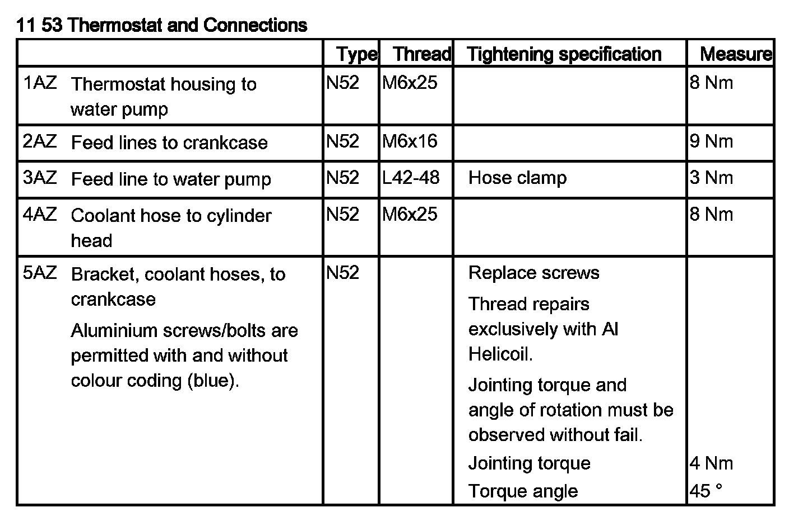
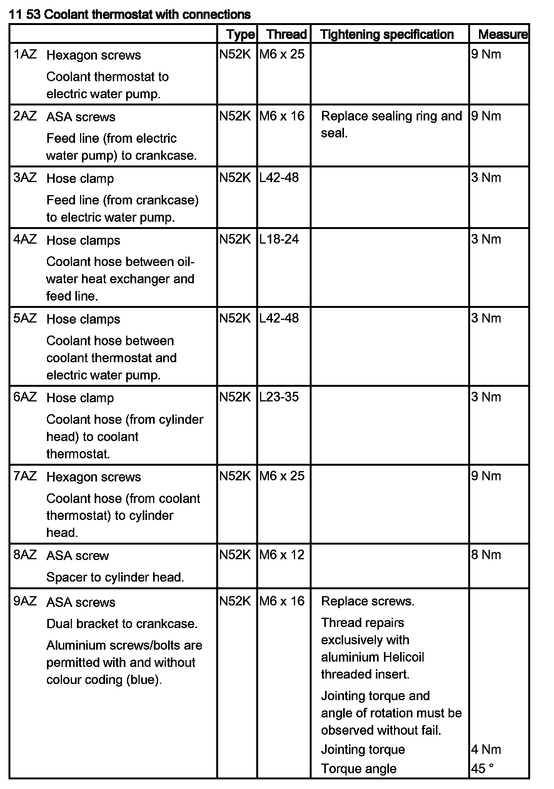

Thermostat: Service and Repair
11 53 000 Removing And Installing/Replacing Coolant Thermostat (N52K)

WARNING:
Risk of scalding.
Only perform these tasks on an engine that has cooled down.
Danger of injury.
Risk of slipping due to coolant on the floor.

Recycling
Catch and dispose of drained coolant in a suitable container.
Observe country-specific waste disposal regulations.

IMPORTANT:
Read and comply with General Notes.
Protect plug connections against coolant and contamination.
Cover plug connections with suitable materials.

Necessary preliminary tasks:
- Remove front underbody protection
- E60, E61, E63, E64, E70, E83, E84: remove reinforcement plate
- E83, E89: release anti-roll bar from front axle
- E70, E89: remove fan cowl

NOTE: E83, E89 only
Release screws (1) (only on front axle support)
Tightening torque 17 10 5AZ. 00 00 Excerpt From Company Standard BMW GS 90003-2

NOTE: Illustration shows coolant thermostat removed.
Disconnect coolant hoses (arrows) on the thermostat (1) with clamping tongs.

NOTE: For a better overview, the picture and text refer to the component when removed.
Unfasten hose clamp (1).
Tightening torque 11 53 5AZ.
Remove coolant hose.
Unfasten hose clamp (2).
Tightening torque 11 53 6AZ.
Remove coolant hose.
Unlock and detach coolant hose (3).
Unlock and detach coolant hose (4).
Disconnect plug connection (5).
Release screws (6).
Tightening torque 11 53 1AZ.
Remove coolant thermostat (7).
Assemble engine.
Fill the cooling system.
Observe capacities.
Installation note:
Check coolant hoses for cracks and damage.
Renew coolant hoses as required.

Recommendation:
On vehicles older than five years, renew coolant hoses.
Check the cooling system for tightness and function.
�� :


*�� :





u� :
B,� :
